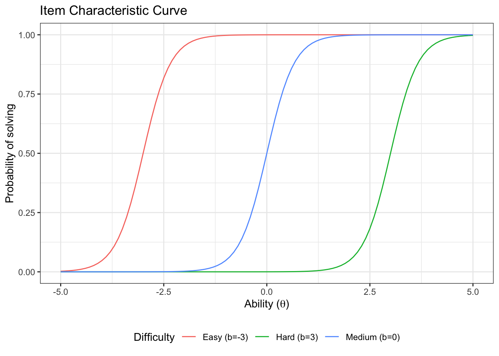
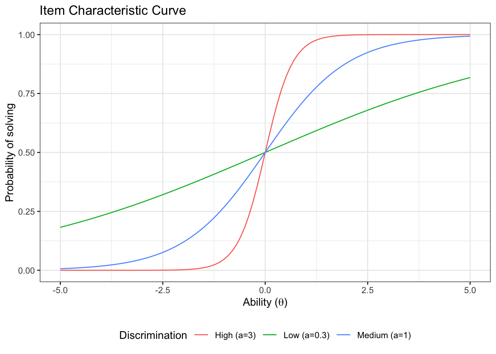
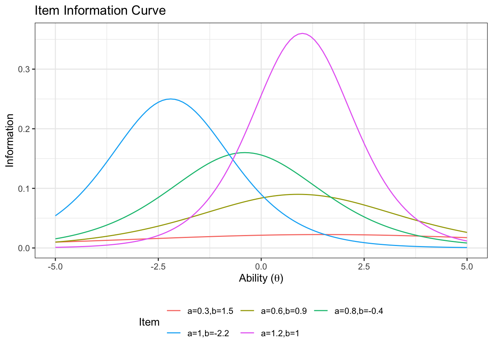
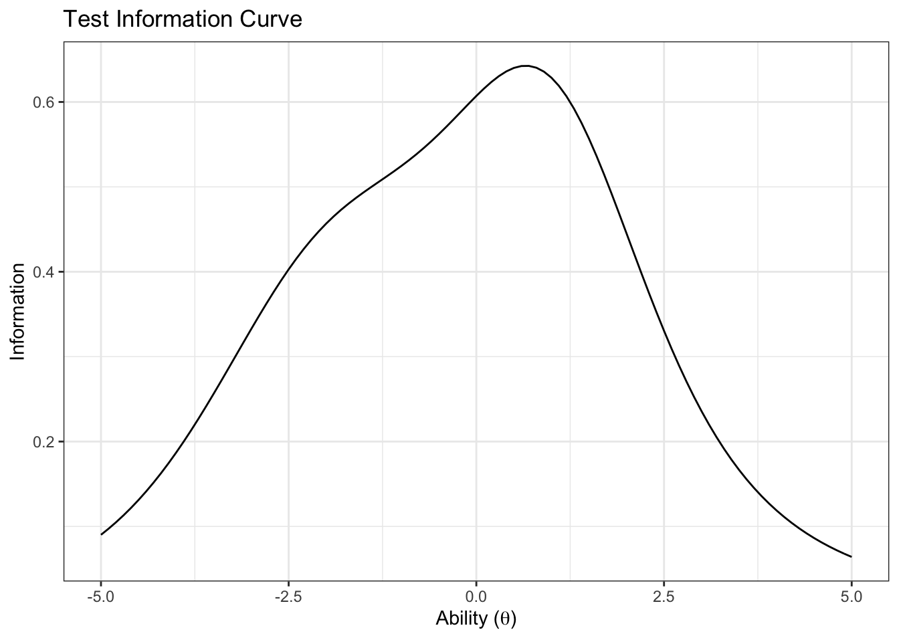

Chapter 3 IRT Stan
3.1 2PL model
The description and interpretation of the model is available in the paper. Here we are just generating the plots in the paper
Function to generate the item characteristic curve.
icc_2pl <- function(a, b, label, thetamin=-5, thetamax=5, step=0.1){
x<-seq(from=thetamin, to=thetamax, by=step)
y<-exp(a*(x-b))/(1+exp(a*(x-b)))
out<-data.frame(
Prob=y,
Ability=x,
label=rep(label,length(x)))
return(out)
}3.1.1 Impact of item difficulty
Let’s plot three item characteristic curves with different difficulties and the same discrimination.
First, we generate the curves:
icc_easy <- icc_2pl(a=3,b=-3, label = 'Easy (b=-3)')
icc_medium <- icc_2pl(a=3,b=0, label = 'Medium (b=0)')
icc_hard <- icc_2pl(a=3,b=3, label = 'Hard (b=3)')
icc_b <- rbind(icc_easy,icc_medium,icc_hard)Then we plot it
ggplot(icc_b, aes(x=Ability, y=Prob, color=label))+
geom_line()+
labs(
title='Item Characteristic Curve',
# subtitle = 'Impact of difficulty parameter',
x=unname(TeX("Ability ($\\theta$)")),
y='Probability of solving',
color = 'Difficulty'
)+
theme_bw()+
theme(legend.position = 'bottom')
3.1.2 Impact of item discrimination
Let’s plot three item characteristic curves with different discrimination and the same difficulty
First, we generate the curves:
icc_lowdisc <- icc_2pl(a=0.3,b=0, label = 'Low (a=0.3)')
icc_mediumdisc <- icc_2pl(a=1,b=0, label = 'Medium (a=1)')
icc_highdisc <- icc_2pl(a=3,b=0, label = 'High (a=3)')
icc_a <- rbind(icc_lowdisc,icc_mediumdisc,icc_highdisc)Then we plot them:
ggplot(icc_a, aes(x=Ability, y=Prob, color=label))+
geom_line()+
labs(
title='Item Characteristic Curve',
x=unname(TeX("Ability ($\\theta$)")),
y='Probability of solving',
color = 'Discrimination'
)+
theme_bw()+
theme(legend.position = 'bottom')
3.1.3 Item Information
We can calculate the item information for the 2PL. We use the direct formula for the information from the paper.
item_info <- function(a,b,thetamin=-5, thetamax=5,step=0.1){
theta <- seq(from=thetamin, to=thetamax, by=step)
p<-exp(a*(theta-b))/(1+exp(a*(theta-b)))
q<-1-p
info <- a^2*p*q
return(list(info=info,theta=theta))
}Plotting this for a few different item characteristic curves (different values of a and b).
First we create a long data frame with one column for the information
d_item_info_pars <- data.frame(a=c(0.3,1,1.2,0.8,0.6),
b=c(1.5,-2.2,1,-0.4,0.9))
d_item_info<-NULL
for(row in 1:nrow(d_item_info_pars)){
info_list <- item_info(d_item_info_pars$a[row],d_item_info_pars$b[row])
d_item_info<-rbind(
d_item_info,
data.frame(
information=info_list$info,
theta=info_list$theta,
label=rep(
glue::glue('a=',d_item_info_pars$a[row],
',b=',d_item_info_pars$b[row]),
length(info_list$info)
)
)
)
}Now we can plot:
ggplot(d_item_info, aes(x=theta, y=information, color=label))+
geom_line()+
labs(
title='Item Information Curve',
x=unname(TeX("Ability ($\\theta$)")),
y='Information',
color = 'Item'
)+
theme_bw()+
theme(legend.position = 'bottom')+
guides(color=guide_legend(nrow=2,byrow=TRUE))
3.1.4 Test information
For a test, we can calculate the test information as the sum of the individual items.
First let’s pivot wider so we can sum the columns:
d_item_info_wider <- d_item_info %>%
pivot_wider(names_from = 'label', values_from = 'information') %>%
mutate(TestInfo = dplyr::select(. ,starts_with('a=')) %>% rowSums())Now we can plot the test information curve:
ggplot(d_item_info_wider, aes(x=theta, y=TestInfo)) +
geom_line(aes(y=TestInfo))+
labs(
title='Test Information Curve',
x=unname(TeX("Ability ($\\theta$)")),
y='Information'
)+
theme_bw()
3.2 Bayesian 2PL with multiple attempts
The Bayesian two parameter logistic item response theory model with multiple attempts is represented by the following equations.
\[ y_{i,p} \sim \text{Binomial}(N_{i,p},\mu_{i,p}) \\ \mu_{i,p} = \dfrac{\exp(a_i*(b_i-\theta_p))}{1+ \exp(a_i*(b_i-\theta_p))} \\ a_i \sim \text{Half-}\mathcal{N}(0,3) \\ b_i \sim \mathcal{N}(0,3)\\ \theta_p \sim \mathcal{N}(0,3) \]
The Stan code for this model is shown below:
show_stan_code('models/irt2pl.stan')## // IRT 2PL with multiple tries
## // Author: David Issa Mattos
## // Date: 5 April 2021
##
## data {
## int<lower=0> N; // size of the vector
## int<lower=0> y_succ[N]; // number of successful tries
## int<lower=0> N_tries[N]; // number of tries
## int p[N]; // test taker index(the model)
## int<lower=0> Np; // number of test takes (number of models)
## int item[N]; // item index of the test (the dataset)
## int<lower=0> Nitem; // number of items in the test
## }
##
##
## parameters {
## real b[Nitem]; // difficulty parameter
## real<lower=0> a[Nitem]; // discrimination parameter
## real theta[Np]; // ability of the test taker
## }
##
## model {
## real prob[N];
##
## //Weakly informative priors
## b ~ normal(0, 3);
## a ~ normal(0,3);
## theta ~ normal(0,3);
##
## //Linear gaussian model
## for(i in 1:N){
## real mu;
## mu = a[item[i]]*(theta[p[i]]- b[item[i]]);
## prob[i] = exp(mu)/(1+exp(mu));
## }
## y_succ ~ binomial(N_tries,prob);
##
## }
##
## generated quantities{
## vector[N] log_lik;
## vector[N] y_rep;
## for(i in 1:N){
## real mu;
## real prob;
## mu = a[item[i]]*(theta[p[i]]- b[item[i]]);
## prob = exp(mu)/(1+exp(mu));
## log_lik[i] = binomial_lpmf(y_succ[i] | N_tries[i], prob );
## y_rep[i] = binomial_rng(N_tries[i], prob);
## }
## }